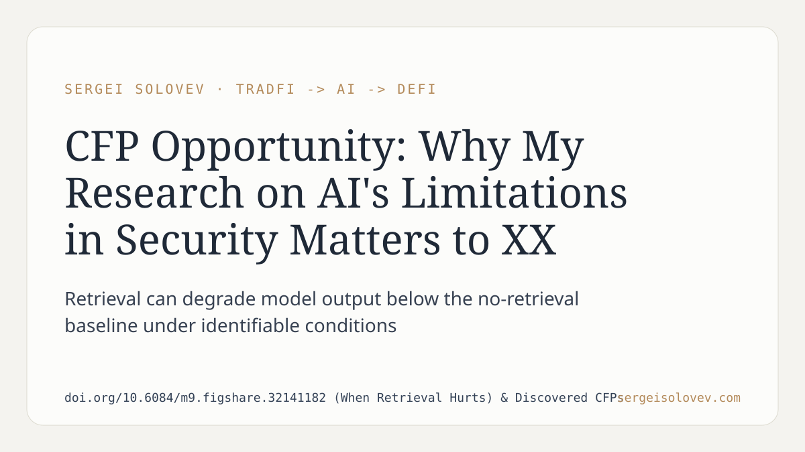

Retrieval-augmented generation is widely treated as strictly additive: more retrieved context equals better model output. The assumption rarely gets stress-tested. The question worth asking is under what conditions does retrieval degrade rather than improve performance.
That is what the paper examines. The findings indicate that retrieval is not uniformly beneficial — in specific configurations, it actively hurts model output, producing results worse than a no-retrieval baseline. The failure mode is not an edge case; it arises consistently under identifiable conditions.
For anyone deploying AI in security analysis or quantitative research pipelines, the implication is direct. A model that retrieves confidently and reasons incorrectly is more dangerous than one that abstains — the error is harder to surface, harder to audit, and harder to correct downstream. If your evaluation assumes retrieval is net-positive by construction, you are measuring against a wrong baseline and will undercount failure rates.
The practical upshot: retrieval architecture decisions need empirical validation against the specific retrieval regime, not general benchmarks. Generalization assumptions do not hold.
Full paper: https://doi.org/10.6084/m9.figshare.32141182 (When Retrieval Hurts) & Discovered CFPs
#RAG #AIagents #ML